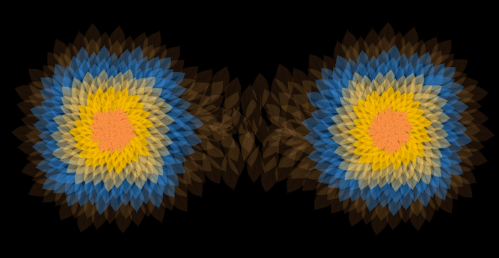

Research
Fascinated by the way nature’s patterns emerge from mathematical principles, I am currently writing my thesis on geometric modeling of phyllotaxis patterns using computer graphics techniques. My work explores how computational methods can simulate and visualize the growth and arrangement of plant structures, revealing the underlying mathematical beauty of nature.

Modelling and Tools
Surface generator
This table showcases the capabilities of the tools I developed as part of a surface editor, designed for precise local control and real-time surface manipulation.
- Adjusting control points vertically and horizontally for fine-tuned shaping.
- Modify multiple points simultaneously for efficient large-scale edits.
- Create folded, curved, or freeform surfaces that match the topology of a plane.
- Add new control points to sketch patterns directly on the surface, enhancing customization and flexibility.
B-Spline Curve Generator
For this project, I implemented a B-Spline curve generator with an interactive UI using ImGui. Users can manipulate control points, adjust the curve's order (k), and visualize the generated curve dynamically.
Additionally, I extended the functionality by incorporating a Surface of Revolution, allowing 2D curves to be rotated around an axis to form 3D surfaces.
Parametric Pattern Generation
This project simulates a point tracing a path as it rotates inside a larger circle, creating intricate geometric patterns based on parametric equations.
By adjusting circle radii, speed, and tracing duration, different patterns emerge, demonstrating mathematical symmetry and dynamic motion.
Simulations
Roller Coaster Simulation
This project simulates a realistic roller coaster using physics-based motion and banking mechanics.
- Physics-Driven Motion – Velocity, acceleration, and gravity influence the ride’s speed dynamically.
- Banking System – The coaster tilts naturally into turns, mimicking real-world track banking.
- Rider's View – First-person experience following the track.
BOIDs Flocking Behavior
This simulation models flocking behavior using Craig Reynolds’ BOIDs algorithm, where agents (birds) follow three key rules:
- Separation – Avoid crowding neighbors.
- Alignment – Match velocity with nearby BOIDs.
- Cohesion – Steer toward the group's center.
Cloth Simulation
Simulates aerodynamic forces for natural fluttering motion.
Jelly Cube Simulation
Soft-body physics showcasing elasticity, deformation, and bounce.
Animations
blender
The following two videos showcase my ability to create realistic smoke and water simulations using Blender.
Rigging
This animation was created as part of a course project, where the goal was to bring an inanimate object to life through movement and storytelling. I chose a piece of paper as my subject and crafted a short narrative where it discovers ‘magic water’ and gains the ability to fly to the moon. The entire process—including modeling, rigging, and animating—was completed in Blender. The animation incorporates key principles of motion, such as squash and stretch (used to enhance the sense of weight and bounce). While there’s room for refinement in camera movement and animation smoothing, the project successfully demonstrates my ability to keyframe dynamic motion, apply expressive deformations, and convey personality through animation.
Flower Coloration Rendering
üåø Key Features:
- üé® Spectral Rendering: Colors are computed based on wavelength-specific light interactions rather than static RGB values.
- ✏️ Sketch-Based Input: Users can sketch spectral curves to control how light interacts with petals, influencing their final color.
- üìè Surface Thickness Impact: The system accounts for thickness variations in petals, affecting light scattering and absorption.